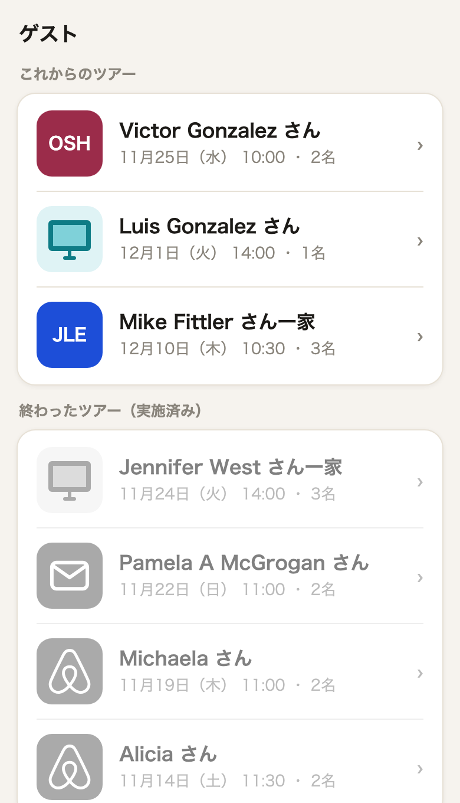
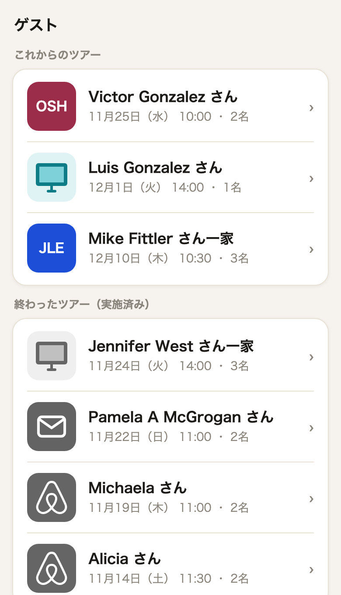
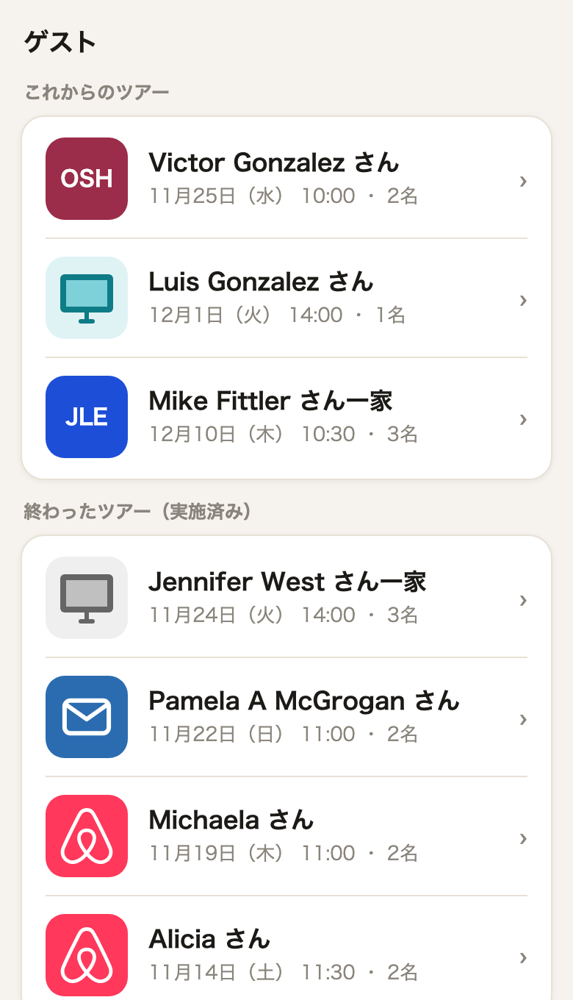
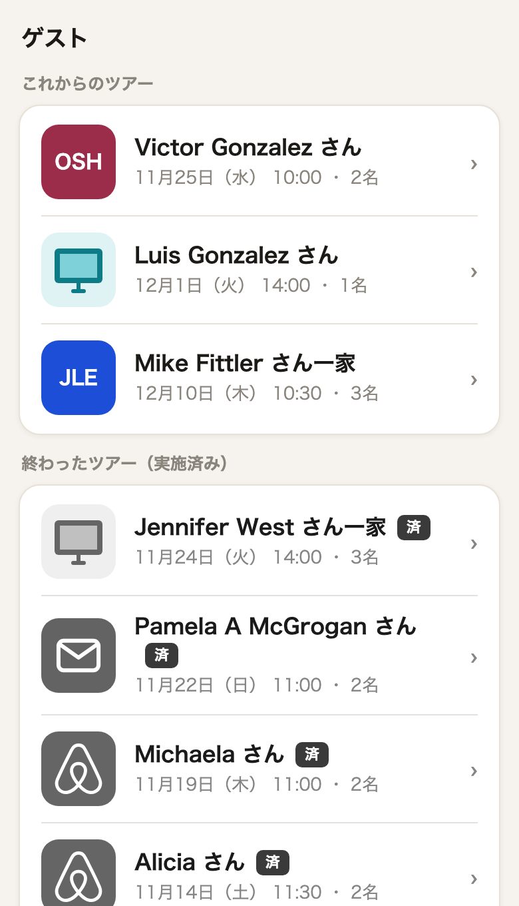
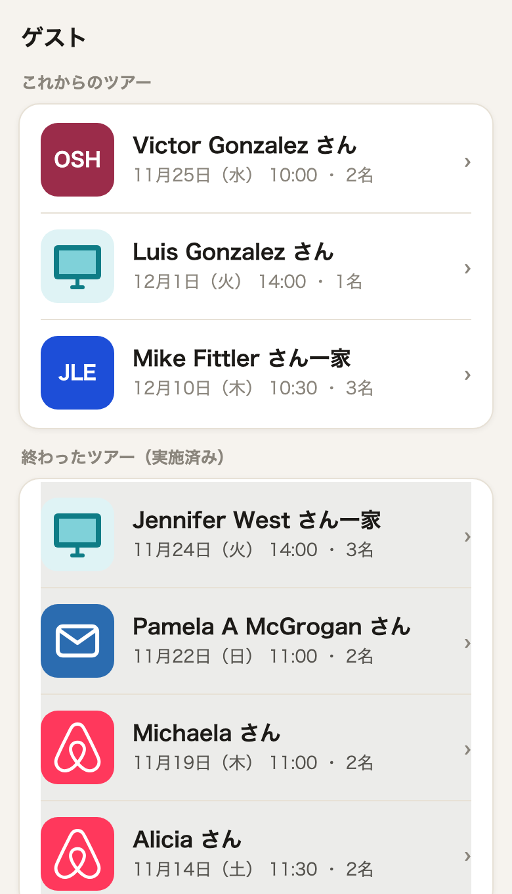

1
案1｜行全体グレー＋薄く
実施済みの行全体に grayscale(100%) をかけ、さらに opacity .55 で薄くする。

終わった感がいちばん強い。名前も日付も薄くなるので、読み返すときは少し目を凝らす。
2
案2｜アイコンだけグレー
チャネルアイコン（経由タイル）だけに grayscale(100%)。文字も背景も通常のまま。

変化は控えめ。今後の行との差はタイルの色だけなので、ぱっと見で見分けにくい。
3
案3｜画像要素だけグレー
タイルの中のロゴ・画像だけをグレーにし、タイルの色と文字はそのまま残す。

いちばん控えめ。白抜きロゴのタイルはほぼ変化せず、画像タイル（自社サイト等）だけがグレーになる。
4
案4｜行全体グレー＋「済」バッジ
行全体に grayscale(100%)（薄くはしない）＋名前の横に 「済」バッジ。

文字の濃さは保たれるので読み返しやすい。終わったことが言葉でも明示される。
5
案5｜背景だけグレー
行の 背景だけをグレー に落とす。文字もアイコンの色も濃いまま。

色は全部残るので情報は読みやすい。帯で面として区切れるので一覧で追いやすい。
モックの作りと前提
- 土台は本番 server.py のゲスト行（.grow／ch-tile-md 56px・名前16px・日付＋人数のサブ行・シェブロン）の構造とCSSを再現したHTMLモック（幅390px）を、ヘッドレスChromeで撮影したものです。
- ゲストは実データ（/api/guests）から：実施済み＝Jennifer West（2026-11-24 14:00・3名・Cal.com）／Pamela A McGrogan（11月22日・2名）／Michaela（11月19日・2名・Airbnb）／Alicia（11月14日・2名・Airbnb）。これから＝Victor Gonzalez（11月25日・2名・Oshinobi）／Luis Gonzalez（12月1日・1名）／Mike Fittler（12月10日・3名・Japan Local Experience）。
- キャンセル済みには既存表示があります（status=cancelled の行に「取消済み」バッジ。ゲスト一覧の行にも付く）。今回のグレー判定は「実施済み（日時経過）」だけが対象で、取消済み行はモックに入れていません。実装時は取消済みバッジ表示が優先される想定です。